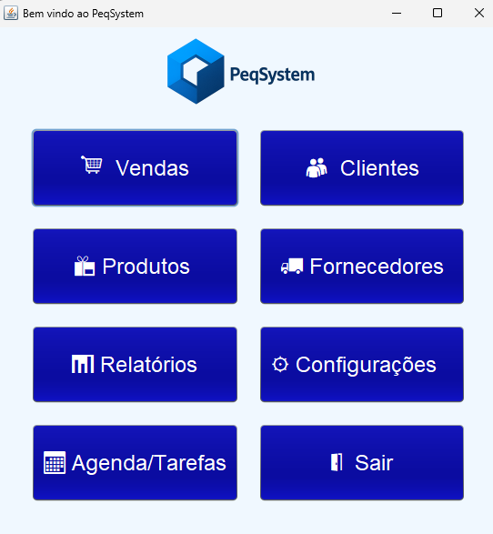
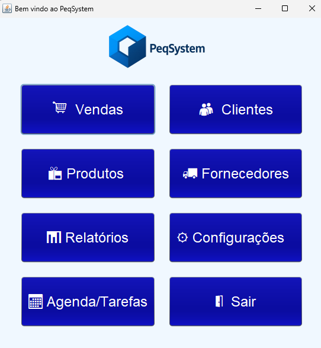

Portfólio
NutriLife

Sistema desktop simples desenvolvido em Java Swing como atividade prática do curso de Análise e Desenvolvimento de Sistemas. O aplicativo realiza o cálculo do IMC, a estimativa de gasto calórico e a distribuição de macronutrientes, servindo como base para aprimorar meus conhecimentos em lógica, interface gráfica e boas práticas de programação.
Ver no GitHubPeqSystem
 



Sistema desenvolvido em Java com integração ao MySQL, voltado para a gestão de vendas e estoque de pequenas empresas. Este projeto faz parte de uma atividade prática do curso de Análise e Desenvolvimento de Sistemas e ainda está em construção. Decidi incluí-lo no portfólio para registrar minha evolução e demonstrar meu progresso técnico ao longo do desenvolvimento.
Ver no GitHubPortfólio Pessoal
Site pessoal desenvolvido de forma independente com HTML, CSS e JavaScript, reunindo projetos, informações profissionais e formas de contato. É o meu primeiro portfólio, criado com base nas experiências e conhecimentos que venho adquirindo ao longo dos cursos e projetos realizados.